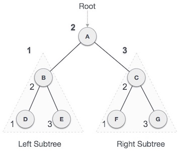
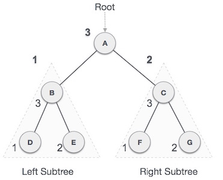

Data Structure & Algorithms - Tree Traversal
Traversal is a process to visit all the nodes of a tree and may print their values too. Because, all nodes are connected via edges (links) we always start from the root (head) node. That is, we cannot randomly access a node in a tree. There are three ways which we use to traverse a tree −
- In-order Traversal
- Pre-order Traversal
- Post-order Traversal
Generally, we traverse a tree to search or locate a given item or key in the tree or to print all the values it contains.
In-order Traversal
In this traversal method, the left subtree is visited first, then the root and later the right sub-tree. We should always remember that every node may represent a subtree itself.
If a binary tree is traversed in-order, the output will produce sorted key values in an ascending order.
We start from A, and following in-order traversal, we move to its left subtree B. B is also traversed in-order. The process goes on until all the nodes are visited. The output of inorder traversal of this tree will be −
D → B → E → A → F → C → G
Algorithm
Until all nodes are traversed − Step 1 − Recursively traverse left subtree. Step 2 − Visit root node. Step 3 − Recursively traverse right subtree.
Pre-order Traversal
In this traversal method, the root node is visited first, then the left subtree and finally the right subtree.

We start from A, and following pre-order traversal, we first visit A itself and then move to its left subtree B. B is also traversed pre-order. The process goes on until all the nodes are visited. The output of pre-order traversal of this tree will be −
A → B → D → E → C → F → G
Algorithm
Until all nodes are traversed − Step 1 − Visit root node. Step 2 − Recursively traverse left subtree. Step 3 − Recursively traverse right subtree.
Post-order Traversal
In this traversal method, the root node is visited last, hence the name. First we traverse the left subtree, then the right subtree and finally the root node.
We start from A, and following Post-order traversal, we first visit the left subtree B. B is also traversed post-order. The process goes on until all the nodes are visited. The output of post-order traversal of this tree will be −
D → E → B → F → G → C → A
Algorithm
Until all nodes are traversed − Step 1 − Recursively traverse left subtree. Step 2 − Recursively traverse right subtree. Step 3 − Visit root node.
To check the C implementation of tree traversing, please click here.